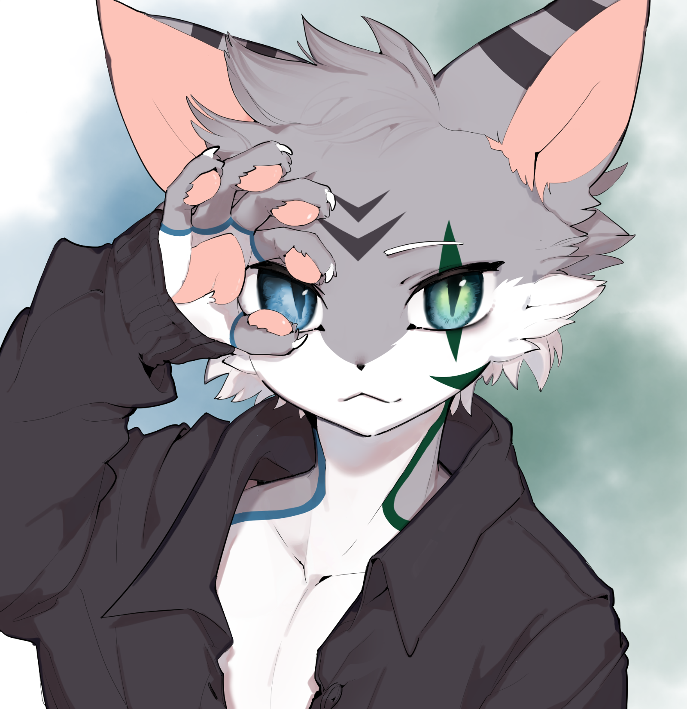
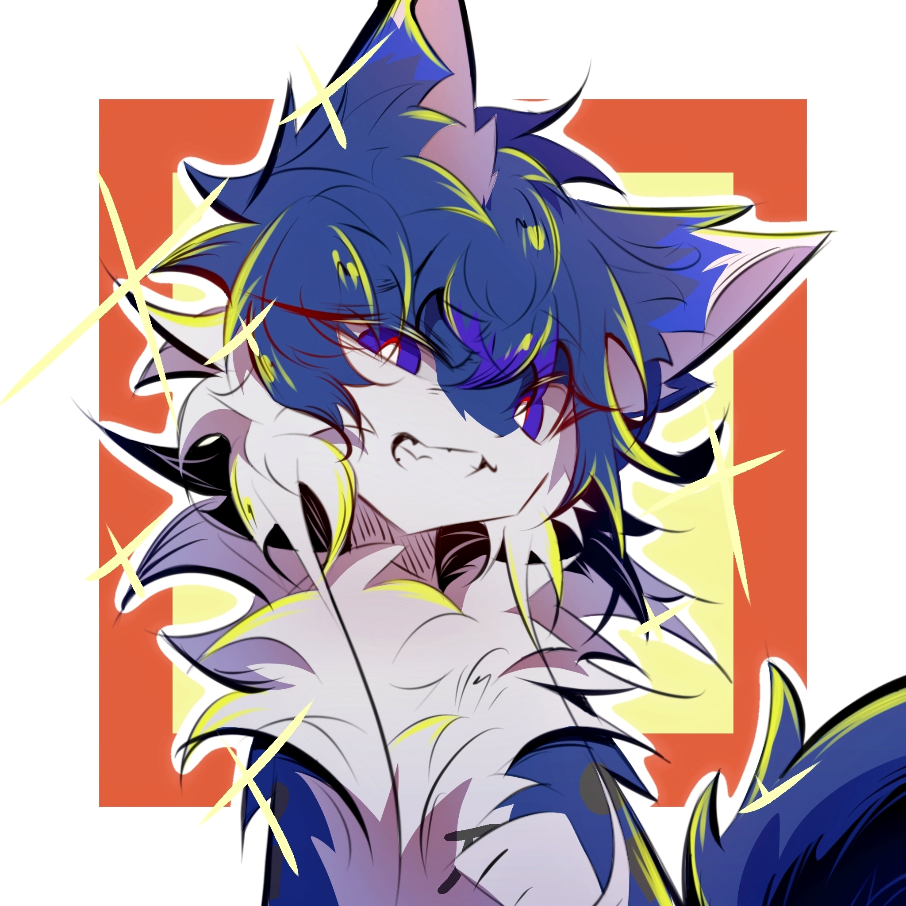

角色
点击角色卡片，查看完整设定
主要角色

主角
灰漠
通体灰白色的狼，黑色条纹恰到好处地点缀，湛蓝色的眼睛，脸颊与身上亦有蓝色花纹。腹部白色毛发上的沙漏状花纹，暗示着他的能力与时间有关。
能力：来源于时间位面——可放慢当前的时间，也可让时间倒流，能力发挥取决于他对身世了解的程度。
身世：父母本不存在、记忆被修改；终将进入灵气位面，与梦毒灵魂相融，觉醒最终能力「循环」。
查看完整设定 →

同伴
兀凌·韫
通体深蓝色的冰晶狼，一头浓密的深蓝色头发，毛发深蓝与白色相间。腿上的冰晶花纹暗示冰系，胳膊上的「i」形花纹与背后的「∞」符号昭示着无穷无尽的掌握。
能力：来源于极地位面——冰、水、水的三态循环、冻结一切概念，四阶段成长。
身世：父母在极地位面与主世界的交互中丧生，远离雪山后对任何兽都抱有敌意，直到结识灰漠才逐渐放下戒备。
查看完整设定 →